~10 The About Page~
9/9/2024
Create your SCSS file for the about page
Adding Another Style Class Rule for Text
Go here to see the Code for the About Pages
Turn on Sass
In Visual Studio
Remember to turn on your Watch Sass
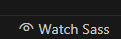
Create your SCSS file for the about page
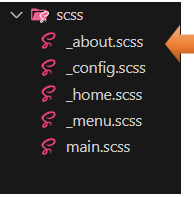
Creating the About Page
Make sure you are inside of the dist folder, to create this file.
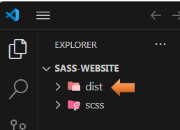
We are going to create the About file page
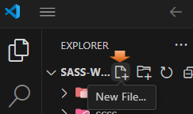
about.html
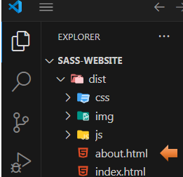
Copy and paste your index.html into your about.html page
Change the title to About Me.
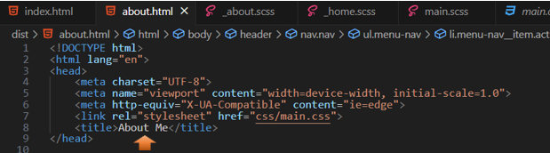
Change the Active Link to Reflect About Page
Since this is the About page, and no longer the home page, we need to remove active from home in the navigation menu, and instead put it on the about link.
*Warning, make sure that you place the word active inside of the quotation marks, and not outside of them.
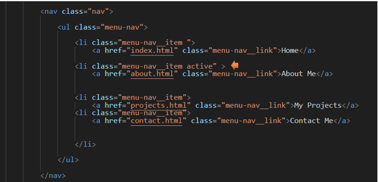When you click on the hamburger menu, you should now see that About Me link is highlighted.
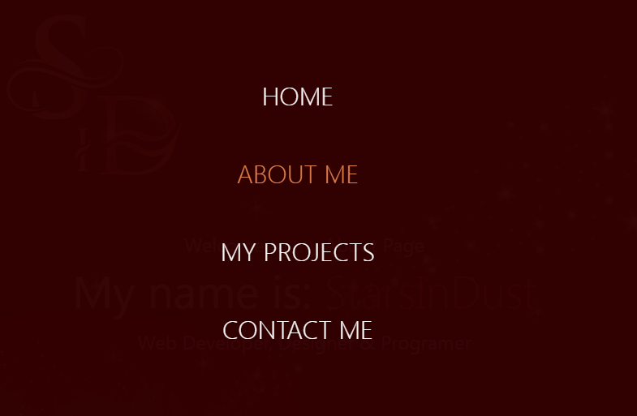
Changes to the Main Section
Inside of the About.html, you will have a main section. You want to change the class in the main section to be about
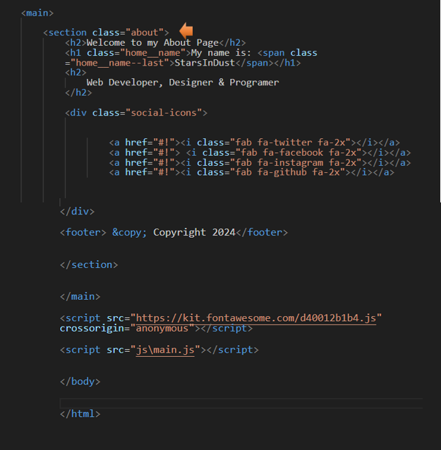
Now you want to delete all of the text that sits above the social-icons class div
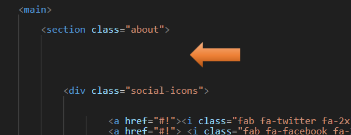
Start writing this code in here:
<div class="about__bio-image">
<div class="about__bio">
</div>
</div>
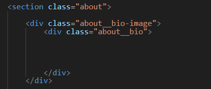
Go here to see the HTML Code for the About Pages
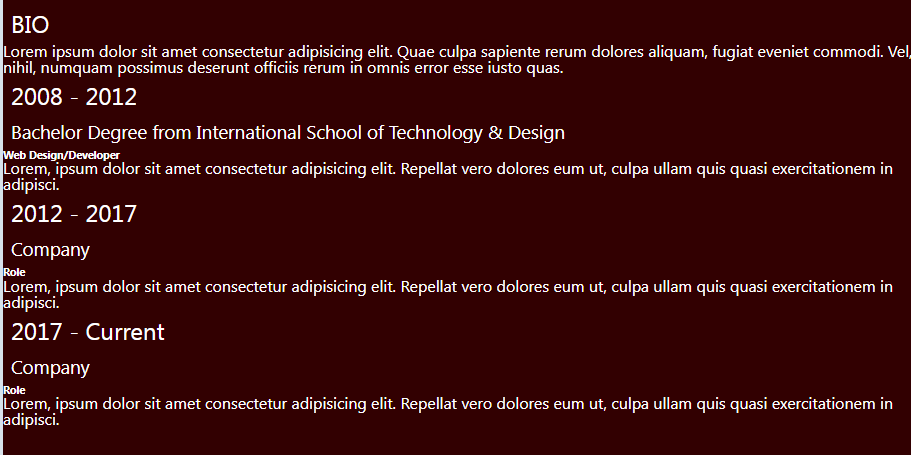
Adding Another Style Class Rule for Text
Notice in the code that we just wrote for the about page that we have a new class for the h2 rule. This class is called text-secondary.
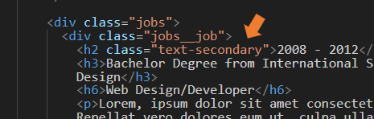
Go to the main.scss page
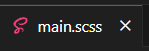
We can write this code right under our rule for the a tag.
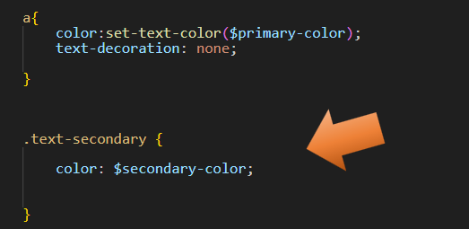
Now our Heading text takes on that secondary color, we had set up
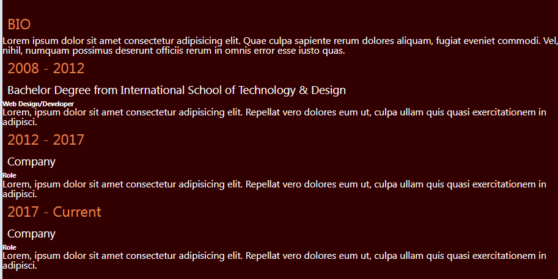
Go to the main.scss page
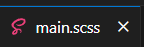
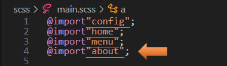
Writing the About SASS file
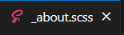
Go here to see the Code for the About Pages
.about {
padding-bottom: 2rem;
&__bio-image {
height: 50vh;
width: 100%;
background:
url('../img/home-image.jpg ') ;
background-size: cover;
display: flex;
flex-direction: column;
align-items: center;
justify-content: flex-end;
p {
margin-bottom: 2rem;
}
}
&__bio {
width: 80%;
text-align: center;
.text-secondary {
padding-bottom: 1rem;
}
}
.jobs {
width: 60vw;
margin: 2rem auto 0 auto;
display: grid;
grid-template-columns: 1fr;
grid-gap: 2rem;
&__job {
background: lighten($primary-color, 10%);
padding: 0.5rem;
border-bottom: 5px solid $secondary-color;
h2, h3 {
margin: 0.5rem 0;
}
h6 {
margin: 0.3rem 0;
}
}
}
.social-icons {
display: flex;
flex-direction: column;
}
footer {
transform:
rotate(90deg)
translate(-7rem, 1rem);
}
}
Probably the most interesting part of the code above is when we come to the footer, where we turn every thing sideways. The translate of -7rem, and 1rem, is a positioning that worked well for me. You may find that you need to move these numbers around to get the copyright and the social-icons to be positioned correctly on the page for you.
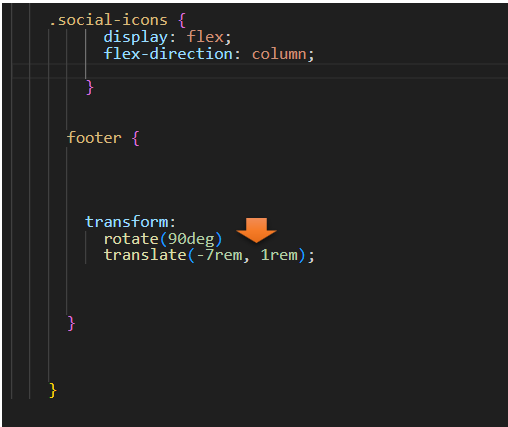
Testing the About page now, you should have this.
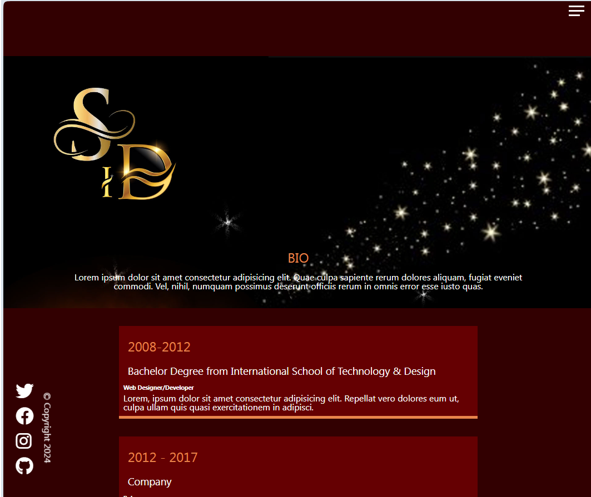
Go here to see the Code for the About Pages